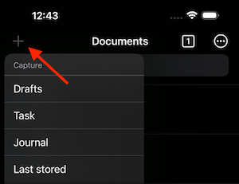
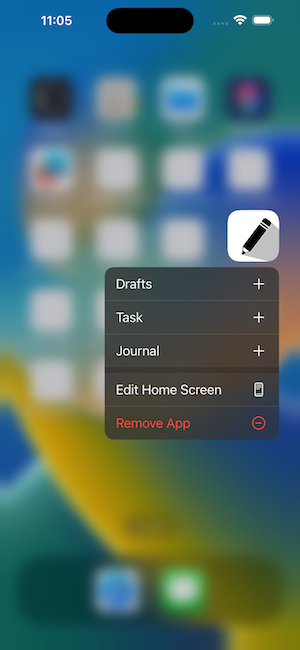
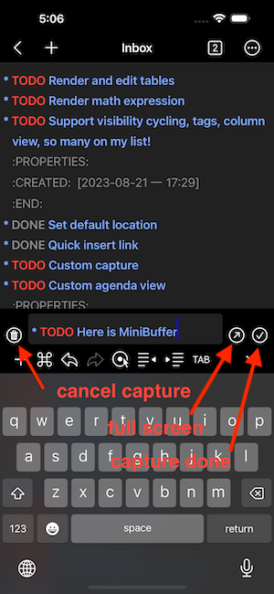

Finally, the development and testing of the custom Capture feature are complete!
1. Capture
The Custom Capture feature in Metanote allows for quick recording and collecting of ideas, tasks, and materials by customizing target files, content templates, and more. By intelligently customizing Capture templates that suit your daily workflow, you can greatly improve the efficiency of information collection and management.
2. Using capture
2.1. Using capture
In any functional interface of Metanote, you can open the Capture feature by using the '+' button on the left navigation bar. You can choose from default or custom templates, and you can customize Capture templates in the settings (please note that the premium version of Metanote is required).
Another very convenient way to use Capture is through the 3D-touch shortcut menu that pops up from the app icon. This allows you to capture directly without opening the app.


2.2. Using MiniBuffer
The MiniBuffer allows you to directly record content in a mini buffer without leaving the current editing buffer. This way, you can take notes while referring to the content in the current buffer. Moreover, you can switch between the two buffer at any time, and even edit different sections of the same file in two buffer without any issues.
You can choose whether to use the MiniBuffer during capture in the 'Settings.' The default is set to 'Automatic,' where it selects whether to use MiniBuffer or full-screen window capture.

2.3. Capture done
When using the MiniBuffer, click the confirm button to save and exit the MiniBuffer. In full-screen mode, editing the file automatically saves upon exiting.
2.4. Cancel capture
Occasionally, during capture, you may change your mind or wish to cancel midway. In such cases, simply click the 'Delete' button, and everything will return to its original state.
2.5. Visit the last stored capture item
If you forget where the captured content is stored, use the 'Last Stored' function in the left menu of the navigation bar to directly open the last file edited during capture.
2.6. Default capture templates
In Metanote, three default Capture templates are provided, each corresponding to different usage scenarios. The Metanote Premium version allows you to customize an unlimited number of Capture templates and modify or delete the default ones.
2.6.1. Drafts
"Drafts" template will create a blank file in the root directory with the current time as the file name. The file name format can be customized in the settings. If you cancel the capture, the file will be automatically deleted. This feature is suitable for quickly recording a temporary file, draft, or idea for later organization.
2.6.2. Tasks
"Tasks" template will append a to-do task in the "Index.org" file in the root directory. This is suitable for quickly recording a to-do item.
2.6.3. Journal
"Journal" template will automatically organize a headline in the "Journal.org" file under the root directory, using the current date in the format of year, month, and day, which is known as a datetree in org mode. This is suitable for keeping a diary.
3. Setting up capture
3.1. template target
Specification of where the captured item should be placed.
3.1.1. file
Text will be placed at the beginning or end of that file. You can directly choose an existing file or select a folder. If you choose a folder, you'll need to provide a filename template, supporting template expansion syntax. If the file already exists, it will be used directly. If the file doesn't exist, it will be automatically created.
3.1.2. file+headline
Fast configuration if the target heading is unique in the file.
3.1.3. file+olp
For non-unique headings, the full path is safer.
3.1.4. file+olp+datetree
This target1 creates a heading in a date tree2 for today’s date. If the optional outline path is given, the tree will be built under the node it is pointing to, instead of at top level. Check out the :time-prompt and :tree-type properties below for additional options.
3.2. template type
The type of entry, a symbol. Valid values are:
entry
An Org mode node, with a headline. Will be filed as the child of the target entry or as a top-level entry.
item
A plain list item or checkbox item, placed in the first plain list at the target location. Again the target file should be an Org file.
plain
Text to be inserted as it is.
3.3. template properties
The rest of the entry is a property list of additional options. Recognized prop- erties are:
prepend
Normally new captured information will be appended at the target location (last child, last table line, last list item, …). Setting this property changes that.
immediate-finish
When set, do not offer to edit the information, just file it away im- mediately. This makes sense if the template only needs information that can be added automatically.
- empty-line-before
empty-line-after
Set this to the number of lines to insert before and after the new item. Default 0, and the only other common value is 1.
time-prompt
Prompt for a date/time to be used for date/week trees and when filling the template. Without this property, capture uses the current date and time.
tree-type
When week, make a week tree instead of the month tree, i.e., place the headings for each day under a heading with the current ISO week.
unnarrowed
Do not narrow the target buffer, simply show the full buffer. De- fault is to narrow it so that you only see the new material.
3.4. template expansion
In the template itself, special “%-escapes”4 allow dynamic insertion of content. The tem- plates are expanded in the order given here:
- %<FORMAT> The result of format-time-string on the FORMAT specification. see https://www.unicode.org/reports/tr35/tr35-31/tr35-dates.html#Date_Format_Patterns
- %t Timestamp, date only.
- %T Timestamp, with date and time.
- %u, %U，Like ‘%t’, ‘%T’ above, but inactive timestamps.
- %i Initial content, the region when capture is called while the region is active. If there is text before ‘%i’ on the same line, such as indentation, and ‘%i’ is not inside a ‘%(exp)’ form, that prefix is added before every line in the inserted text.
- %f File visited by current buffer when org-capture was called.
- %F Full path of the file or directory visited by current buffer.
- %^g Prompt for tags, with completion on tags in target file.
- %^G Prompt for tags, with completion all tags in all agenda files.
- %^t, %^T, %^u, %^U Like ‘%t’, but prompt for date. Similarly ‘%^T’, ‘%^u’, ‘%^U’. You may define a prompt like ‘%^{Birthday}t’.
- %^{PROP}p Prompt the user for a value for property PROP.
- %^{PROMPT} Prompt the user for a string and replace this sequence with it.
- %N Insert the text entered at the Nth ‘%^{PROMPT}’, where N is a number, starting from 1.
- %? After completing the template, position point here.
3.5. Support for Org mode
This section is provided for users familiar with Org mode; if you're not familiar, feel free to skip it. Metanote is the app with the most comprehensive support for Org mode. It also supports most of the commonly used custom Capture settings in Org mode. Here's a detailed breakdown of the support:
3.5.1. template type
[X]entry - supported[X]item - supported[X]checkitem - supported，using item[X]plain - supported[ ]table-line - Not supported yet; will be addressed when handling tables in a unified manner later.
3.5.2. target
[X]file - supported[ ]id - Not supported yet; will be addressed when implementing org-roam later.[X]file+headline - supported[X]file+olp - supported[ ]file+regexp - Not supported yet[X]file+olp+datetree - supported[ ]file+function - Not supported for now; due to Metanote not yet supporting elisp, functions are temporarily not supported.[ ]function - Not supported for now; similarly, as mentioned above, custom file names are not yet supported in Metanote. As a workaround, you can define file names dynamically using the template expansion as in the template when selecting a directory. This allows you to dynamically choose or create different files during capture.[ ]clock - Not supported for now; clock-related features will be addressed later and supported uniformly.
3.5.3. properties
[X]:prepend - supported[X]:immediate-finish - supported[X]:empty-line-before - supported[X]:empty-line-after - supported[ ]:clock-in - Not supported for now; clock-related features will be addressed later and supported uniformly.[ ]:clock-keep - Not supported for now; clock-related features will be addressed later and supported uniformly.[ ]:clock-resume - Not supported for now; clock-related features will be addressed later and supported uniformly.[X]:time-prompt - supported[X]:tree-type - supported[X]:unnarrowed - supported[ ]:table-line-pos - Not supported yet; will be addressed when handling tables in a unified manner later.[ ]:kill-buffer - Not supported; Metanote has internally implemented this functionality automatically.[ ]:no-save - Not supported; Metanote has internally implemented this functionality automatically.
3.5.4. template expansion
[ ]%[FILE] - Not supported yet[ ]%(EXP) - Not supported yet[X]%<FORMAT> - supported[X]%t - supported[X]%T - supported[X]%u, %U - supported[X]%i - supported[ ]%a - Not supported yet[ ]%A - Not supported yet[ ]%l - Not supported yet[ ]%c - Will support in the next version.[ ]%x - Will support in the next version.[ ]%k - Not supported yet[ ]%K - Not supported yet[ ]%n - Not supported yet[X]%f - supported[X]%F - supported[ ]%:keyword - Not supported yet[X]%^g - supported[X]%^G - supported[X]%^t, %^T, %^u, %^U - supported[ ]%^C - Will support in the next version.[ ]%^L - Will support in the next version.[X]%^{PROP}p - supported[X]%^{PROMPT} - supported[X]%N - supported[X]%? - supported